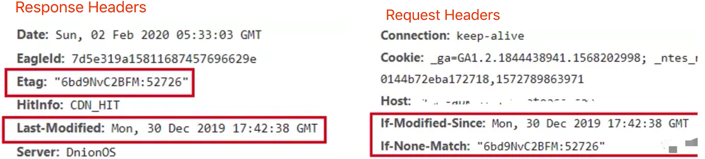

前后端分离的时代，网络请求是前端的生命线！
http 面试题
- 前端工程师开发界面
- 需要调用后端的接口，提交/获取 数据 —— http 协议
- 要求事先掌握好 ajax
首先看题目
- http 常见的状态码有哪些？
- http 常见的 header 有哪些？
- 什么是 Restful api
- 描述一下 http 的缓存机制（重要）
http 状态码
状态码分类
- 1xx 服务器接收到请求
- 2xx 请求成功，如 200
- 3xx 重定向，如 302
- 4xx 客户端错误，如 404
- 5xx 服务器端错误，如 500
常见状态码
- 200 成功
- 301 永久重定向（配合 location 新的地址，浏览器自动处理）
- 302 临时重定向（配合 location 新的地址，浏览器自动处理）
- 304 资源未被修改
- 404 资源未找到
- 403 没有权限
- 500 服务器错误
- 504 网关超时
http methods
传统的 methods
- get 获取服务器的数据
- post 向服务器提交数据
- 简单的网页功能就这两个操作
现在的 methods
- get 获取数据
- post 新建数据（数据还没有，要创建一个新的，比如一个新的留言、新的博客）
- patch / put 更新数据
- delete 删除数据
Restful API
- 一种新的 API 设计方法（早已推广使用）
- 传统 API 设计：把每个 url 当做一个功能
- Restful API 设计：把每个 url 当做一个唯一的资源的标识
如何设计一个唯一的资源
尽量不用 url 参数
传统 API 设计： /api/list?pageInde=2 ，有点像问号前面是一个函数，然后问号后面是一个参数
Restful API 设计： /api/list/2 ，就是一个资源的标识，不会与其他重复
用 method 表示操作类型
传统 API 设计
post 请求： /api/create-blog
post 请求： /api/update-blog?id=100
get 请求： /api/get-blog?id=100
Restful API 设计
post请求： /api/blog
patch请求： /api/blog/100
get请求： /api/blog/100
http headers
常见的 Request Headers
- Accept：浏览器可接收的数据格式
- Accept-Encoding：浏览器可接收的压缩算法，如 gzip (如原来内容100kb，最小压缩到 30kb)
- Accept-Language：浏览器可接受的语言，如 zh-CN
- Connection:keep-aive 一次 TCP 连接重复使用
- cookie
- Host：域名
- User-Agent（简称 UA）浏览器信息
- Content-type：发送数据的格式，如 application/json
常见的 Response Headers
- Content-type：返回数据的格式，如 application/json
- Content-length：返回数据的大小，多少字节
- Content-Encoding：返回数据的压缩算法，如 gzip
- Set-Cookie
http 缓存策略
关于缓存
当第一次用浏览器访问一个新的网站时（本地无该网站任何信息），服务端会原原本本把所有的数据返回给浏览器，但是当第二次访问时，可以把没有必要重新获取的东西不再重新获取。
关于为什么需要缓存
最大的目的是为了让页面加载的更快一些。
网络请求的加载到相比于 CPU 的计算，包括页面的渲染都是非常慢的一个事情，所以如果要做性能优化，让页面显示的更快，因此要从最带的瓶颈——网络请求下手，尽量减少网络请求的体积和数量，让网络请求更快一些。
可以被缓存的资源—— 静态资源（js、css、img），可根据文件内容生成一个哈希值，如果内容变了，哈希值会变，输出的文件名也会变，这样文件缓存就没有问题了，但访问 html 时无法再后面加入哈希值。
强制缓存
初次请求，浏览器返回资源和 Cache-Control ，浏览器有了资源之后可继续工作，这个时候如果服务端感觉资源可以被缓存，就会加一个 Cache-Control ，如果服务端感觉资源不适合被缓存就不会加 Cache-Control 。
Cache-Control
- 在 Response Headers 中（服务端控制）
- 控制强制缓存的逻辑
- 例如 Cache- Control:max-age=31536000（单位是秒），一年
百度的 logo Cache- Control 是一年
因此在此请求的时候只要判断 Cache- Control 时间还没过期，然后浏览器就会在本地缓存里面去找这个资源，不会到服务端，然后直接返回这个资源。因此该次请求未经过网络，直接读取的本地缓存会非常快，所以此次请求会更快一些，
如果缓存过期失效了，就会再次请求服务端，服务端重新返回资源和 Cache- Control ，然后又会设置一遍过期时间，这样如果近期再请求，就会命中了本地缓存，很快的返回资源。
Cache- Control 的值
- max-age：缓存最大过期时间
- no-cache：不用强制缓存，正常向服务端请求
- no-store：不用强制缓存而且不用服务端的缓存措施，直接简单粗暴的把资源再重新返回一份，比较彻底，但不常见
- private
- public
关于 Expries（知道即可）
- 同在 Response Headers 中
- 同为控制缓存过期
- 已被 Cache- Control 代替
协商缓存（对比缓存）
- 服务器端缓存策略（服务端判断资源是否可以用浏览器中缓存的内容）
- 服务器判断客户端资源，是否和服务端资源一样
- 一致则返回 304，否则返回 200 和最新的资源
资源标识
在 Response Headers （因为是服务端返回的）中，有两种：
- Last-Modified 资源的最后修改时间
- Etag 资源的唯一标识（一个字符串，类似人类的指纹）
Last-Modified
If-Modified-Since 永远返回浏览器缓存中最近一次修改的时间
Etag
If-None-Match 就是上一次服务器端返回的 Etag 字符串
第一次访问：
第二次访问（通过 Last-Modified 或 Etag 命中缓存）：
可以看出两次资源请求的 size 差的很多
Last-Modified 和 Etag 共存
会优先使用 Etag
Last-Modified 只能精确到秒级，对计算机来说秒级还是一个比较宽泛的时间段，一般以 mm 或以内为单位
如果资源被重复生成，而内容不变，则 Etag 更精确（Etag 根据内容计算），而 Last-Modified 每次都会重新请求
http 缓存-综述
三种刷新操作
- 正常操作：地址栏输入 url，跳转链接，前进后退等
- 手动刷新：F5，点击刷新按钮，右击菜单刷新
- 强制刷新：ctrl+F5
不同刷新操作，不同的缓存策略
- 正常操作：强制缓存有效，协商缓存有效
- 手动刷新：强制缓存失效，协商缓存有效
- 强制刷新：强制缓存失效，协商缓存失效
题目
- http 常见的状态码有哪些
- http 常见的 header 有哪些
- 什么是 Restful API
- 描述一下 http 的缓存机制（重要，上面流程图一定要会）